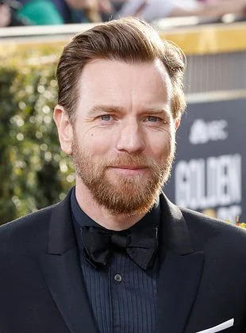
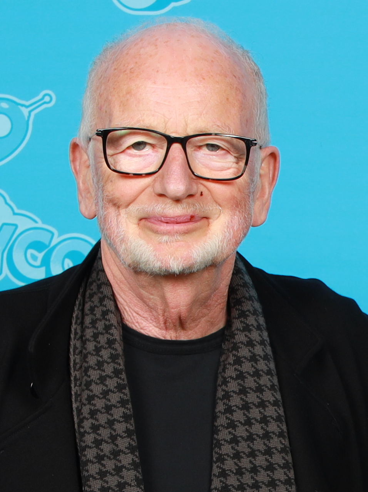
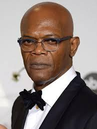
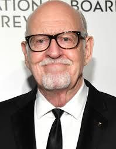

Maestro Jedi leal que enfrenta a Anakin en Mustafar. Sabio y determinado.
El elegido que cae en el Lado Oscuro al temer perder a Padmé.
Esposa de Anakin. Su trágico destino marca el nacimiento de Luke y Leia.

Señor Sith que manipula la política y a Anakin para fundar el Imperio.

Jedi poderoso que desafía a Palpatine, pero es traicionado por Anakin.

Líder espiritual Jedi. Exiliado tras fallar en su intento de detener a Sidious.
Lucasfilm Ltd.: Productora principal, dirigida por George Lucas.
Industrial Light & Magic (ILM): Encargada de efectos visuales.
Fox Studios Australia: Principal lugar de rodaje (Sídney).
Skywalker Sound: Edición y diseño de sonido.